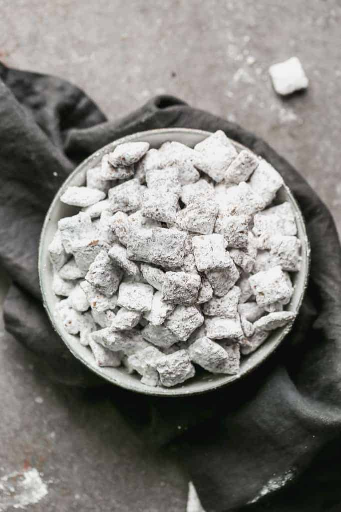

MUDDY BUDDIES

INGREDIENTS:
- 9 cups of rice checks
- 1 cup semi-sweet chocolate chips
- 1/2 cup peanut butter
- 1/4 cup buuter or margerine
- 1 teaspoon vanilla
- 1 cup powdered sugar
PREPERATION:
- Into a large bowl, measure cereal and set aside
- In a microwavable bowl, microwave chocolate chips, peanut butter, and butter uncovered on high for 1 minute; stir.
Microwave about 30 seconds longer or until mixture can be stirred smooth. Stir in vanilla.
Pour mixture over cereal stirring until evenly coated. Pour into a 2 gallon resealable food storage plastic bag.
- Add powdered sugar. Seal bag; shake until well coated. Spread on waxed paper to cool. Store in airtight container in refrigerator.
ENJOY!